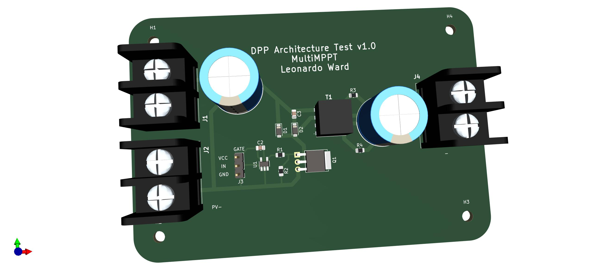
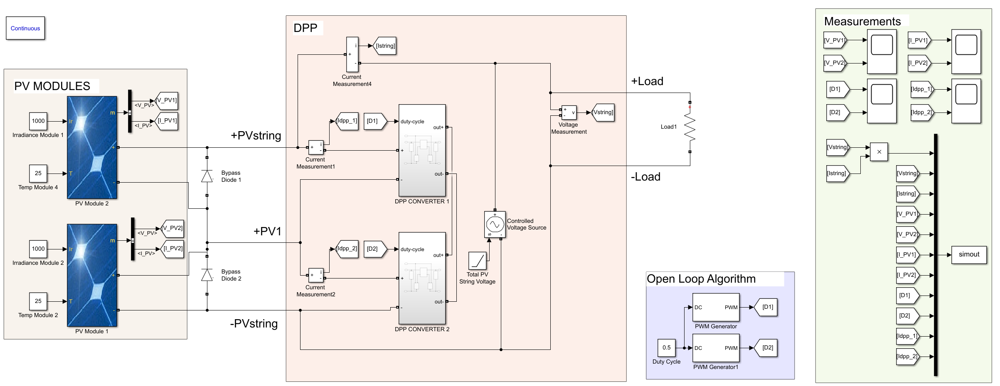
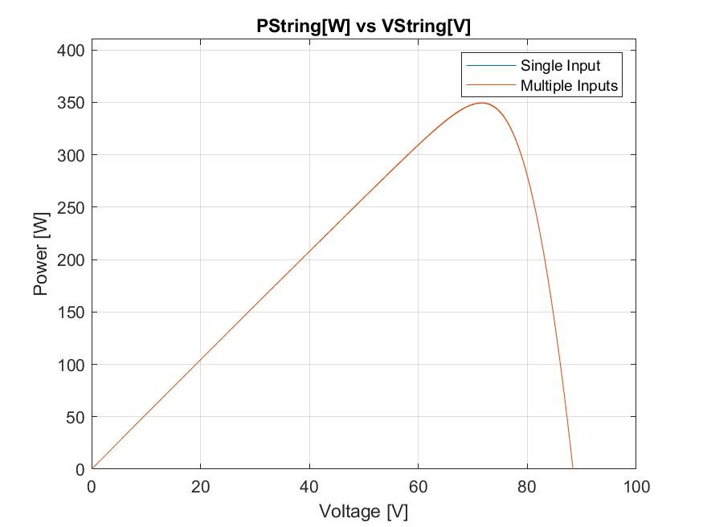
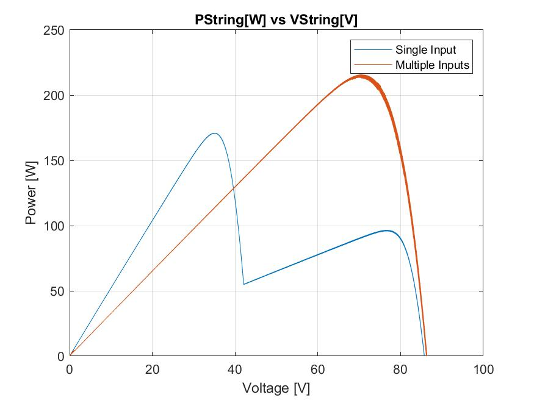
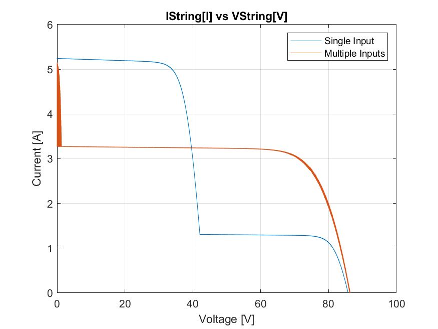
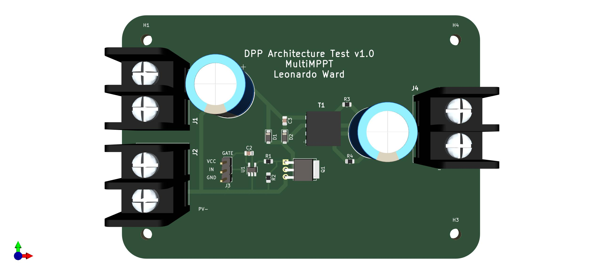
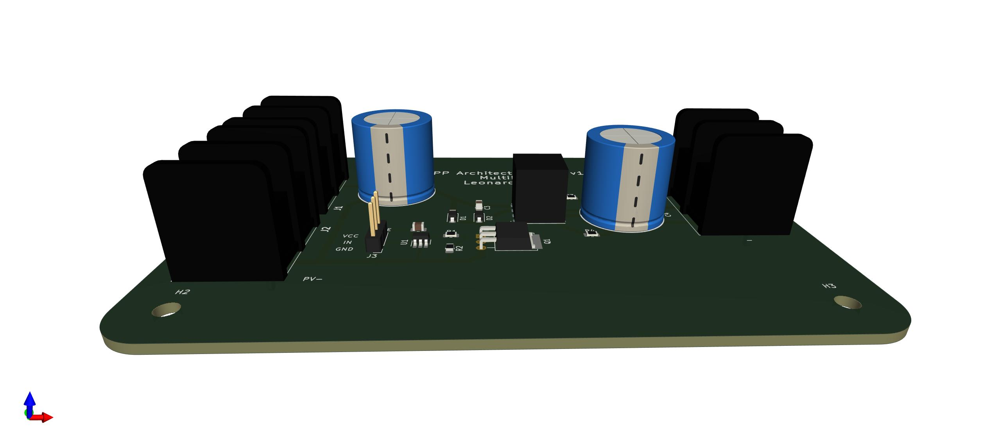
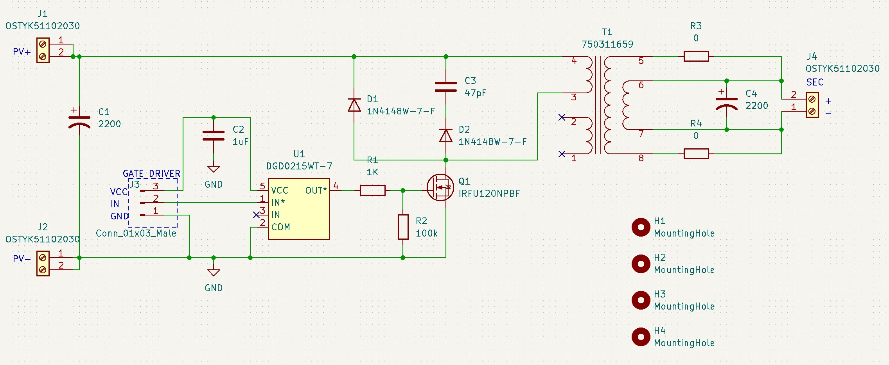

MultiMPPT — a DPP-Architecture MPPT
MultiMPPT is a design study for a low‑cost, high‑efficiency maximum power point tracker with multiple independent inputs, built on a Differential Power Processing (DPP) architecture. It is documented on Hackaday; this page covers two pieces of it — a Simulink model that tests whether the DPP idea actually helps, and a KiCad 6 v1.0 board that breaks out one converter cell for the bench.
Why Differential Power Processing
In an ordinary series PV string every module is forced to carry the same current. As soon as one module is shaded, dirty or simply weaker than its neighbours it becomes the bottleneck: the string either gives up that module's share of the power, or bypasses it entirely through its bypass diode. Worse, the string's power–voltage curve grows several local peaks, and a single MPPT controller can lock onto the wrong one.
DPP keeps the modules in series feeding the load directly — where the bulk of the energy flows straight through at high efficiency — but adds a small converter at each module that handles only the difference in current needed to hold that module at its own maximum power point. Because each converter processes just the mismatch, it can be small and cheap. This project uses the module‑to‑bus flavour: each DPP converter is an isolated flyback that shuttles the differential current between its module and the common string bus.
The Simulink Model
The model (repository dpp-mppt-simulation) puts two PV module blocks in series, each with its own irradiance and temperature input and a bypass diode, and connects a DPP flyback converter across each one. A controlled voltage source stands in for the rest of the string, and every module voltage, module current and differential current is logged to the workspace for the plotting scripts.

The Simulink model — two series PV modules, a DPP flyback per module, and the measurement bus.
DPP_open_loop.slxruns the two converters at a fixed duty cycle and sweeps the string operating point, tracing the whole P–V and I–V characteristic.DPP_perturb_and_observe.slxadds a Perturb & Observe loop that walks the duty cycles to the maximum power point, so the tracker can be watched settling after a change in shading.
Simulation Results
The key comparison is one MPPT for the whole string (“Single Input”) against a per‑module DPP converter (“Multiple Inputs”).

Uniform irradiance — the two curves overlap. With no mismatch, DPP neither helps nor hurts.


Partial shading — the single‑MPPT curve breaks into two peaks and its usable maximum drops; the DPP case keeps one, higher peak because the shaded module no longer throttles the healthy one.
The Test Board (v1.0)
The board (repository dpp-architecture-pcb) is one DPP converter cell, broken out so it can be driven, loaded and measured on its own. There is no control loop, no sensing and no microcontroller on the board: the switching MOSFET is driven by an external controller through a 3‑pin header.


The v1.0 board — a single isolated flyback channel with PV input, isolated secondary and an external gate‑drive header.
How the Circuit Works
It is a textbook isolated flyback converter:

The flyback power stage — input cap, gate driver, MOSFET, snubber, isolation transformer, output cap.
- Input — the module connects to
J1/J2;C1(2200 µF) holds the module voltage steady over a switching cycle. - Switch —
Q1(IRFU120N N‑channel MOSFET) chops the transformer primary current: energy is stored in the core whileQ1is on and delivered to the secondary when it turns off. - Gate drive — the PWM signal enters on
J3(VCC/IN/GND) and is buffered byU1(DGD0215 gate driver).R1(1 k) is the gate resistor andR2(100 k) the pull‑down that keepsQ1off when there is no drive. - Snubber —
D1,D2(1N4148W) withC3(47 pF) absorb the leakage‑inductance spike at turn‑off. - Transformer —
T1is a Würth 750311659 flyback transformer (180 kHz, 1500 Vrms isolation) — it both transfers the energy and provides the galvanic isolation the DPP architecture needs. - Output —
C4(2200 µF) filters the isolated secondary, brought out onJ4.
| Connector | Purpose |
|---|---|
| J1 / J2 | PV+ / PV− — module input |
| J3 | Gate drive from the external controller (VCC, IN, GND) |
| J4 | Isolated secondary / string‑bus connection |
Repositories
dpp-mppt-simulation— the MATLAB/Simulink model and plotting scripts. GPL v3.0.dpp-architecture-pcb— the KiCad 6 project, BOM, Gerbers and 3D model for the v1.0 test board. GPL v3.0.- Project background: MultiMPPT on Hackaday.
This is bench‑research work: the simulation shows the DPP architecture recovers the power a single MPPT loses under mismatch, and the v1.0 board exists to measure the real flyback stage. The next steps are closing the control loop on‑board, a multi‑channel layout, and the MPPT firmware.
Posted In:
Power Electronics